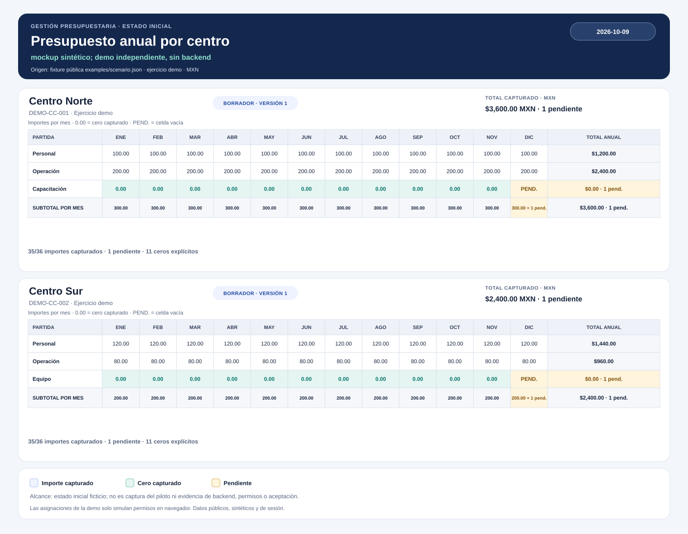

EXPERIENCIA COMPLEMENTARIA · EJEMPLO SINTÉTICO
Gestión y Control Presupuestario
Demo editable de 2 centros × 3 partidas × 12 meses, con cero, pendiente, entrega, devolución, versión obsoleta e historial.
Problema operativo
Capturar y revisar presupuestos descentralizados por centro de costo evitando confusiones de versión y sobreescrituras.
Solución técnica
Plantillas y presupuestos nativos con ciclo formal de revisión (borrador a validación) y control de concurrencia en servidor.
Tecnologías observadas
- React
- TypeScript
- Python
- FastAPI
- SQLite
Ejemplo reproducible
Entrada: Dos centros, tres partidas y doce meses por partida; cada centro inicia con una celda pendiente.
Resultado: Totales parciales ficticios de MXN 3,600.00 y MXN 2,400.00; los pendientes impiden entregar.
Decisión técnica: Guardar importes en centavos, aplicar versión esperada al cambio y preservar cada snapshot recibido.
Evidencia verificable
Totales iniciales ficticios: DEMO-CC-001 MXN 3,600.00 y DEMO-CC-002 MXN 2,400.00; 35 celdas capturadas y una pendiente en cada centro. Estado y snapshots verificados localmente.

Alcance, límites y próximos pasos
La demo pública vive en memoria y simula perfiles en JavaScript. Piloto 0.9.5, entrega 20261002T210016Z, reportados por el solicitante; estado en vivo y aceptación funcional no confirmados.
No se atribuyen métricas cuantitativas no medidas ni autoría exclusiva de componentes no acreditados. El repositorio documenta la aportación verificada y sus límites.
Comprobación reproducible: python examples/verify.py; node examples/verify_state.js
Ver repositorio y documentación técnica (abre en otra pestaña) ↗
Leer caso de estudio completo en GitHub (abre en otra pestaña) ↗